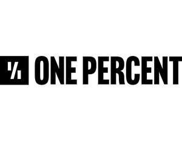

Trade Mark Journal No.2025/019 9 May 2025
UK00004163807 21 February 2025 (9,16,25,35,38,41,42)

- Class 9
- Downloadable software and software applications for playing audio and video podcasts featuring content in the fields of business, lifestyle, personal development and the humanities; Downloadable platform software in relation to podcasts, downloadable podcasts, electronic books and audio books; Downloadable computer software in relation to podcasts downloadable podcasts, electronic books and audio books; Electronic publications (downloadable), namely, books, series of books, booklets, magazines, journals, newspapers and articles, in the fields of business, lifestyle, personal development, and the humanities; Downloadable Podcasts in the fields of business, lifestyle, personal development and the humanities; Downloadable interactive entertainment software, namely, software for playing audio and video podcasts; Downloadable media, particularly, downloadable podcasts in the fields of business, lifestyle, personal development and the humanities; electronic books in the fields of business, lifestyle, personal development and the humanities; audio books in the fields of business, lifestyle, personal development and the humanities; digital books in the fields of business, lifestyle, personal development and the humanities; computer and application software for personal computers, laptops, mobile or tablet devices for entertainment, instructional and educational purposes, in the fields of business, lifestyle, personal development and the humanities; pre-recorded discs; apparatus and instruments all for the recording, reproduction and transmission of sound, images, video and data, in the fields of business, lifestyle, personal development and the humanities.
- Class 16
- Printed matter, namely, books, booklets, magazines, journals, newspapers and articles in the fields of business, lifestyle, personal development and the humanities; Printed Diaries; Personalized writing Journals; Printed Activity books in the fields of business, lifestyle, personal development, relationship development and the humanities; Printed Promotional publications in the fields of business, lifestyle, personal development and the humanities; Stationery; Printed Note pads; Printed Note books; Printed Calendars; Gift bags; Personal organisers; Instructional and teaching material, namely, printed textbooks, guides, booklets, manuals and tests in the fields of health, wellness, business, lifestyle, personal development, relationship development and the humanities; Pens; Pencils; Erasers; Printed Greetings cards; Cardboard badges; Paper name badges; book marks.
- Class 25
- Clothing, footwear and headgear.
- Class 35
- Advertising, marketing and promotional services; Advertising and marketing services provided by means of podcasts and blogging; Distribution of advertising, marketing and promotional materials in the form of advertising; Distribution of promotional matter in the form of advertising; Marketing consulting services; Business data analysis services; Business Advisory services; Advisory services relating to business analysis; Advisory services for business management; advertising, marketing, publicity and promotional services relating to books and book publishing; presentation of goods on communication media, for retail purposes; retail services, including online retail services, connected with the sale of books, printed matter, printed publications, audio books, electronic books, digital books, pre-recorded discs, pre-recorded digital media, electronic publications, downloadable electronic publications, downloadable digital media and recordings, podcasts, blogs, computer and application software for personal computers, laptops, mobile or tablet devices in the field of education and entertainment, stationery, writing materials and implements, book marks, or of representations or descriptions of any of those goods, all relating to the fields of business, lifestyle, personal development and the humanities; Provision of information and advice relating to all the aforesaid services.
- Class 38
- Telecommunications services, namely, transmission of podcasts, live and prerecorded; Communication by online blogs and podcasts, namely, Transmission of information by electronic communications networks; Audio broadcasting services; Audio Broadcasting services in relation to podcasts; Audio Broadcasting services via the internet; Podcasting, namely, transmission of podcasts; Podcasting services, namely, transmission of podcasts; Transmission of podcasts; Provision of information and advice relating to all the aforesaid services.
- Class 41
- Entertainment services, namely, providing live and pre-recorded online non-downloadable films, audio, video, podcasts and interviews, in the fields of business, lifestyle, personal development and the humanities; Online entertainment services, namely, providing online non-downloadable films, audio, video, podcasts and interviews, in the fields of business, lifestyle, personal development and the humanities; Entertainment services in relation to podcasts, namely, production services; Audio, video and multimedia production, and photography; Audio and video editing services; Audio recording and production services; Audio, film, video and television recording services; Editing or recording of sounds and images; Production of television shows; Production of live television shows; Conferences and live performance services in relation to podcasts, namely, production services; Arranging, conducting, and presenting live entertainment events, namely, films, audio, video, podcasts, book readings and interviews, in the fields of business, lifestyle, personal development and the humanities; Live stage shows featuring interviews, book readings and lectures in the fields of business, lifestyle, personal development and the humanities; Production of podcasts; production of audio books and electronic books; Production of audio-visual media, namely, podcasts; Providing non-downloadable multi-media entertainment via a website, namely, providing audio and video productions featuring content in the fields of business, lifestyle, personal development and the humanities; Sound recording and video entertainment production services; writing of entertainment podcasts; writing of educational content for podcasts for entertainment purposes; Provision of entertainment via podcast; education services related to books, in the fields of business, lifestyle, personal development and the humanities; publication of texts, books and printed matter in the fields of business, lifestyle, personal development and the humanities; publishing services in the fields of business, lifestyle, personal development and the humanities; electronic publishing services in the fields of business, lifestyle, personal development and the humanities; providing electronic publications in the fields of business, lifestyle, personal development and the humanities; on-line publication of audio books, digital books and electronic books (non-downloadable) in the fields of business, lifestyle, personal development and the humanities; book club services in the fields of business, lifestyle, personal development and the humanities; Provision of information and advice relating to all the aforesaid services.
- Class 42
- Software as a service featuring software for accessing audio and video films and podcasts in fields of business, lifestyle, personal development and the humanities; Platform as a service featuring software for accessing audio and video films and podcasts in fields of business, lifestyle, personal development and the humanities; website hosting for podcasts featuring content in the fields of business, lifestyle, personal development and the humanities; Hosting for multimedia entertainment content featuring audio and video films and podcasts on the internet; Internet Hosting of digital content; Hosting of digital content on the internet; Hosting of digital content on the internet, namely, on-line journals, podcasts, films and blogs; Hosting digital multimedia entertainment content on the Internet; development and leasing of software, including software for use by others via the Internet and similar networks; designing and maintaining websites for others; Provision of information and advice relating to all the aforesaid services. .
Flight Studio Group Limited
Representative: Wallace LLP